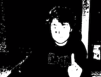
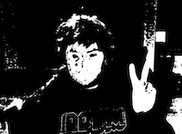
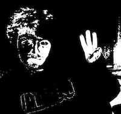
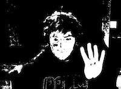

CS 585: Image and Video Computing
Isabella Rocha
Benjamin Reichelt, and Skyler Gauuan
February 17, 2021
The current problem was hand detection, and to solve this we needed to construct an algorithm that would detect a persons hand as well as their movements. We designed and implemented an algorithm that recognizes hand shapes and gestures. This result is useful because it allows us to capture a live feed input of a human hand. This can be useful for future implementations to high level machines that could revolve around fitness tracking, autopilot, and many other areas. We made the assumption that there will be a working camera feed with a human on the other side. This person would have to show their hand to the camera for us to detect the hand movements and shape. Some anticipated difficulties were setting the restrictions to our image detection, and knowing which algorithm would be best suited for our purposes.
We decided on 4 hand gestures to detect: one finger, two finger, three fingers, and four finger. Once deciding on the gestures to detect, we converted them into binary greyscale images. We then eroded and dilated the images until there were clearly detected blobs that represented the template for our gestures. We took these templates and ran them against various sizes of live frames from the webcam (pyramid method) in order to check for different sizes of the same gesture. We chose the gesture that had the highest correlation coefficient (also one that was above 78%) to represent as a found match. We then displayed another screen that defaults to black, but flashes various colors depending on which gesture is shown. (Yellow for 4, Purple for 3, Turquoise for 2, and Orange for 1)
Our experiments consisted of informal testing throughout development (we repeated each gesture around 100 times). Every time we changed a value, we re-ran the code and checked it on the camera live feed. This was especially prominent in creating the window for skin detection and conversion to a binary feed, as our algorithm kept picking up the wall color and lighter colors in the testing room in addition to human skin. There were times that the algorithm wouldn't detect the skin and there would be too many shadows on the hand. We researched some articles and algorithms on skin detection for some guidance and implemented the different methods. We also tweaked the threshold for a positive match as well, as too high gave false positives, and too low didn't pick up the hand signals.

The source image was the live camera detection of the human hand. The result image was the color output to show that our algorithm was correctly detecting the hand gestures (the number of fingers)
| Trial | Source Image | Result Image |
|---|---|---|
| Trial 1: 1 finger detection (orange color output) |
 | |
| Trial 2 2 finger detection (turquoise color output) |
 | |
| Trial 3: 3 finger detection (purple color output) |
 | |
| Trial 4: 4 finger detection (yellow color output) |
 |
Methods and Results:
Strengths:
Our algorithm and binary image template worked really well, and it shows overall great potential for future applications
Weaknesses:
There was a lot of lag when we performed our testing. The testing room was also not too convenient with poor lighting for the skin detection features.
Yes. Our results show that our methods are indeed generally successful. We expected the amount of numbers we had as our class to line up with their corresponding color assignment that we coded.
Our methods could be improved with a clearer skin detection approach. There were some trials where there wasn't a correct interpretation of our number count. This could be improved either with a better testing room with better lighting to eliminate shadow confusion, or just an overall better skin detection algorithm
This algorithm shows a lot of promise for our future. Having this level of video detection can provide great benefits to our society. This could potentially be useful for vehicles detecting pedestrians, teaching children how to count with their fingers, and so much more.